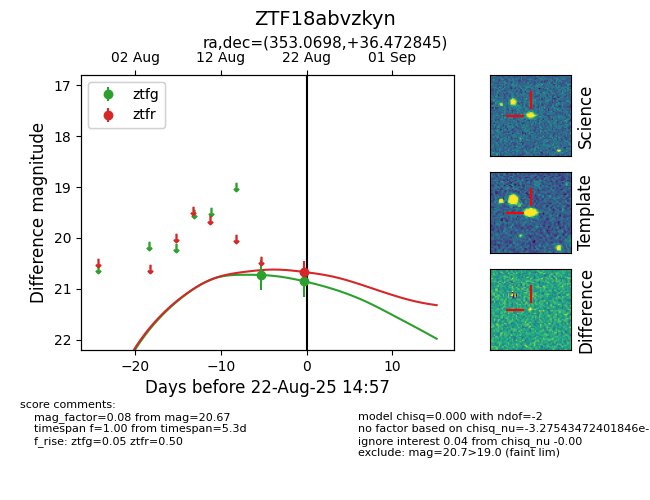

Target ZTF18abvzkyn at 2025-08-22 14:57, see:
FINK: fink-portal.org/ZTF18abvzkyn
Lasair: lasair-ztf.lsst.ac.uk/objects/ZTF18abvzkyn
ALeRCE: alerce.online/object/ZTF18abvzkyn
alt names
ZTF18abvzkyn (ztf,alerce)
coordinates:
equatorial (ra, dec) = (353.0698,+36.47285)
galactic (l, b) = (105.6311,-23.72528)
photometry
last ztfg=20.85, ztfr=20.67
2 ztfg, 1 ztfr detections
